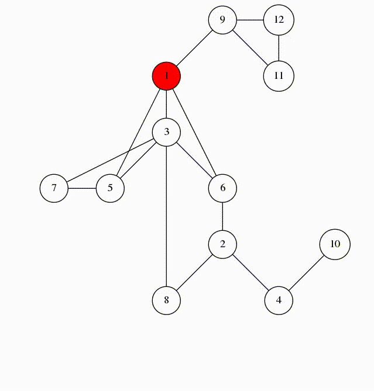

Na busca em profundidade, iteramos pelo grafo sempre procurando ir o mais longe o possível. Quando não resta mais um caminho não visitado, voltamos ao vértice ancestral que havia uma bifurcação.

Imagem retirada de https://codeforces.com/blog/entry/68138?locale=en
Utilizamos uma Pilha P para guardar os vértices visitados.
Tal como na Busca em Largura, obtemos uma Árvore de Busca, e as seguintes informações podem ser definidas durante a iteração:
- P - Pilha: utilizada para guardar os vértices marcados.
- PE(v) Ordem em que v entra em P.
- PS(v) Ordem em que v sai de P.
- π(v) = p : Vértice que marca v = pai de v na árvore de busca.
Algoritmo: DFS
Observação: O algoritmo é uma extensão da busca geral em grafos.
Em negrito, estão as novas alterações que estamos fazendo com a finalidade de obter novas informações sobre o grafo.
Observe também as adições a VISITE1 e VISITE2.
Entrada: Grafo G = (V, E) conexo e raíz de busca r ∈ V(G)
Saída: Listagem de todas as arestas de G
- tempo_entrada ← 0
- tempo_saida ← 0
- Para todo v ∈ V(G)\{r}, faça:
- c(v) ← 0
- c(r) ← 1
- nível(r) ← 0
- PE(r) ← tempo_entrada
- π(r) ← r
- P ← {r}
- Enquanto P ≠ ∅, faça:
- Seja v ∈ P
- se existe w ∈ Adj(v) com vw não visitada:
- se c(v) = 0, então:
- c(w) ← 1
- tempo_entrada ← tempo_entrada +1
- PE(w) ← tempo_entrada
- P ← P ∪ {w}
- VISITE1(vw)
- senão, VISITE2(vw)
- senão:
- c(v) ← 2
- tempo_saida ← tempo_saida + 1
- PS(v) ← tempo_saida
- P ← P \ {v}
VISITE1: (Visita aresta de árvore)
- π(w) ← v
- nível(w) ← nível(v) + 1
- vw ← Aresta de Árvore
VISITE2: (Visita aresta não de árvore = fronde)
- vw ← Fronde
Complexidade
Complexidade de Espaço: O(n+m)
Complexidade de Tempo: O(n+m)